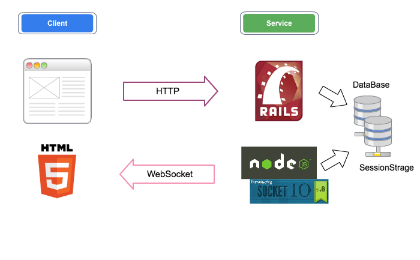

http://bit.ly/v-of-r
The success story of SlideStream
@nodefest2011
Jack
about me
Jxck
id:
Jxck
group: #nodejs_jp
twitter:
Jxck_
blog:
http://d.hatena.ne.jp/Jxck
tumblr:
http://jxck.tumblr.com/
love: music
writing node.js book now
東京Node学園祭2011
http://nodefest.jp/2011
http://nodefest.jp/2011
about Nodefest2011
東京Node学園祭2011
2011年10月29日
Yahoo! JAPAN
チケット
200
枚完売
スタッフ+関係者
40
人強
ニコ生視聴者 約
700
人
Session in nodefest
Node.js の作者
Ryan
Socket.IO の作者
Guillermo
企業の導入事例
LT (公募)
Session in nodefest
Node.js の作者
Ryan
Socket.IO の作者
Guillermo
企業の導入事例
LT (公募)
初心者向けセッション(Jxck)
My Session
Session for beginner?
経験者ばかりとは限らない
一方
"初心者向け"
は飽きてる人も多い
どうしたら、全ての人に満足してもらえるか?
経験者も興味が持てる、初心者向けセッション?
Session for all level
初心者向け
Node.js のライブコーディング
経験者向け
Node.js を使った新しいスライドの魅せ方
SlideStream
Realtime Coding
Realtime User Experience
SlideStream のアーキテクチャ
Node.js + Socket.IO
SlideStream の実装
WebSocket
をフルに使った、リアルタイムな表現
ローカルとクラウドを連携した
プロセス間通信
リアルタイム Web
の知見を踏まえた、パフォーマンス/セキュリティ対応
懸念点
接続負荷(会場+ニコ生)
ネットワーク状況(帯域 + WebSocket)
セキュリティ(セッションの妨害)
ストレステスト
コミュニティと First Server 社協力のもと
単一
Node
プロセス + Redis
同時に
500~1000
の接続を実施
接続下で Nodefest2011 のデモを実施
stress test
Response
Viewer Responce
Node.js セッションの感想
hachi_eiji
コード
わかりやすい
なー #nodefest
knsmr
Express + Socket.io
おもしろい
っていうか、こんなにカンタンだったのか。双方向にemitすりゃいいのね。すごい #nodefest
ichiro_j
なるほど
＞node.js の sinatra ライクなフレームワーク http://t.co/HtFLsO71 #nodefest
Viewer Responce
SlideStream への感想
nicolli
ターミナルのなかみが同時に表示されるだけでどよめく。
すげえ。
#nodefest
cimadai
すごすぎて
感動
がとまらない #nodefest
xrekkusu
まじ
謎の技術
や・・・ #nodefest
jmblog
node はプレゼンの仕方すら変えてしまうのか…
恐ろしい子
！ #nodefes
Viewer Responce
上級者の感想
naoya_ito
@Jxck 後半、
実践的ポイント
だったり今 Noder の周りでなにがおこってるかわかっておもしろかったです。後半みたいな話もっとしてほしいー #nodefest
t_wada
@Jxck_ の発表、非常に面白かった。ノウハウのないところに取り組んだ経験者ならではの泥臭い工夫や学びもあり、
静かな感動があった
。聴けてよかった。
jedschmidt
overhearing at #nodefest:
"this is like the coolest demo i've ever seen."
(@ryah on @Jxck_'s live coding)
経験者も興味が持てる、初心者向けセッション!!
フォローアップ
東京 Node 学園
で、 SlideStream のセッション
アーキテクチャ
プラクティス
考察
の共有
実装／パフォーマンスだけでなく、
セキュリティ
についても言及しているのは、世界でもまだ少ない。
http://d.hatena.ne.jp/Jxck/20111226/1324905662
Realtime Web Practice Output
発展
Hybrid Architecture

Stream.IO
http://d.hatena.ne.jp/Jxck/20111223/1324659260
まとめ
Realtime User Experience
経験者も興味が持てる、初心者向けセッション!!
End or Question
/
(0)